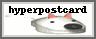
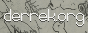
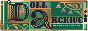
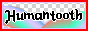
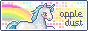
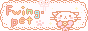
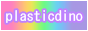

｡𖦹｡° flowers turn to face it ｡𖦹｡°
｡𖦹｡°Sites I Love｡𖦹｡°
⋆✴︎˚｡⋆✴︎˚｡⋆✴︎˚｡⋆✴︎˚｡⋆✴︎˚｡⋆✴︎˚｡⋆














⋆✴︎˚｡⋆✴︎˚｡⋆✴︎˚｡⋆✴︎˚｡⋆✴︎˚｡⋆✴︎˚｡⋆
｡𖦹｡°Resources｡𖦹｡°
One of the essentials that helps this site run smooth is deploying to neocities. This tutorial teaches you to connect your Visual Studio Code (which is the program I code in) to Github, and your Github account to Neocities. No more copy and pasting!
I use dithermark to dither... my marks...
If you use grid then this is very helpful to create your lay out. I personally like grid because I find it easier to make my pages mobile responsive with grid.
This may be controversial but I prefer MDN Docs over W3 schools for learning code, but that might just be because of my preference for darkmode lol.
ALSO my big fucking pet peeve is when links that take you to another site don't open in another tab/window. You can paste target="_blank" after your links to make them open in another tab instead. If you do this already then I love u.
There's plenty of other helpful stuff that I used to build this site but I can't really think of them right now....
｡𖦹｡°Epic and Awesome Links｡𖦹｡°
Windows93.net Minigames, freaky tools, web nostalgia... I think you guys are gonna like this site.